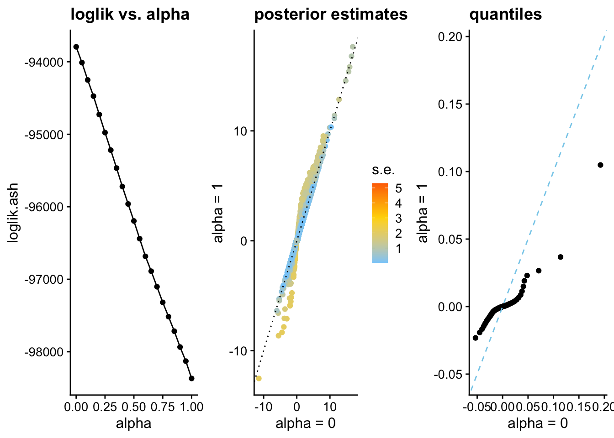
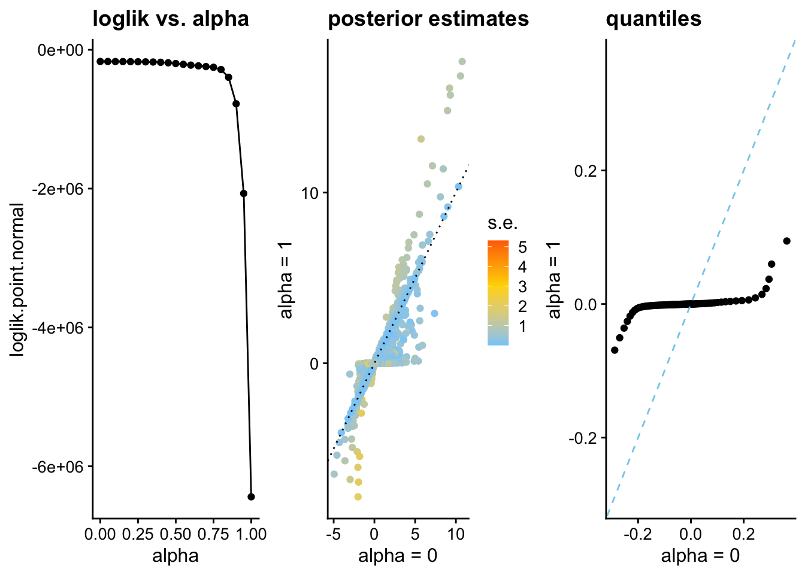
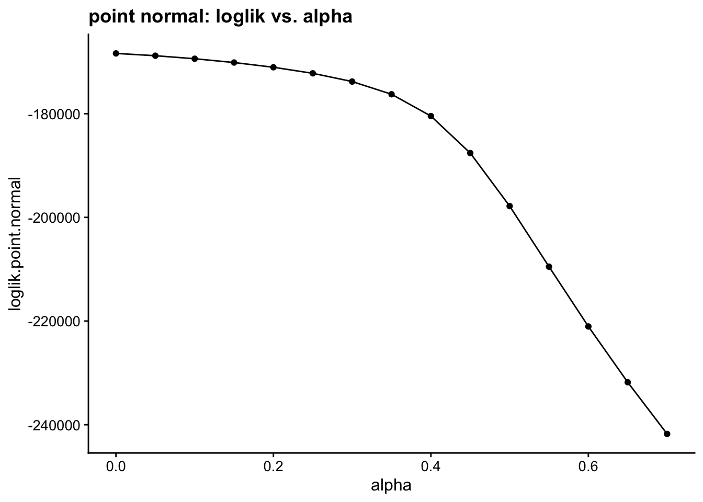
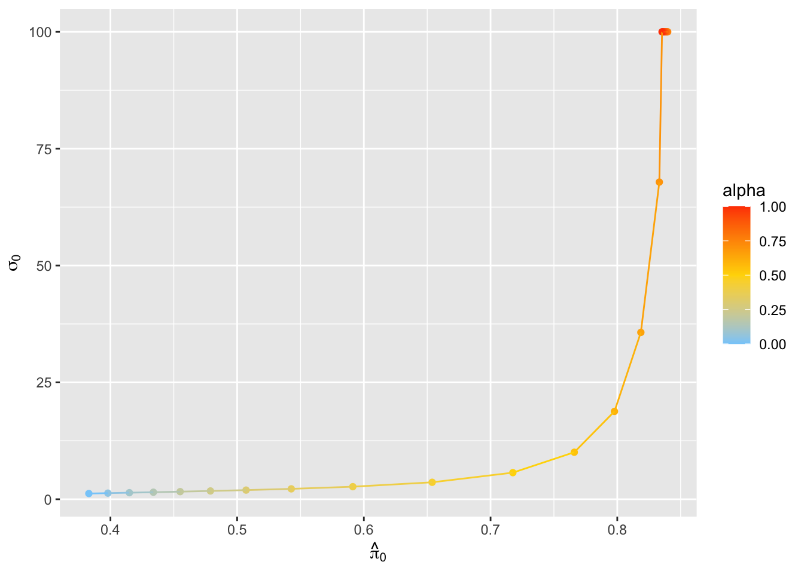
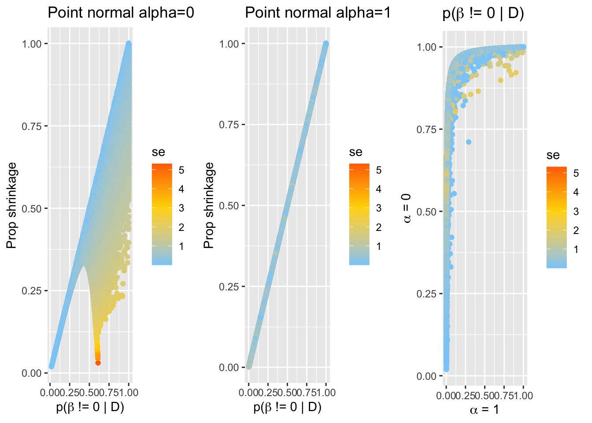
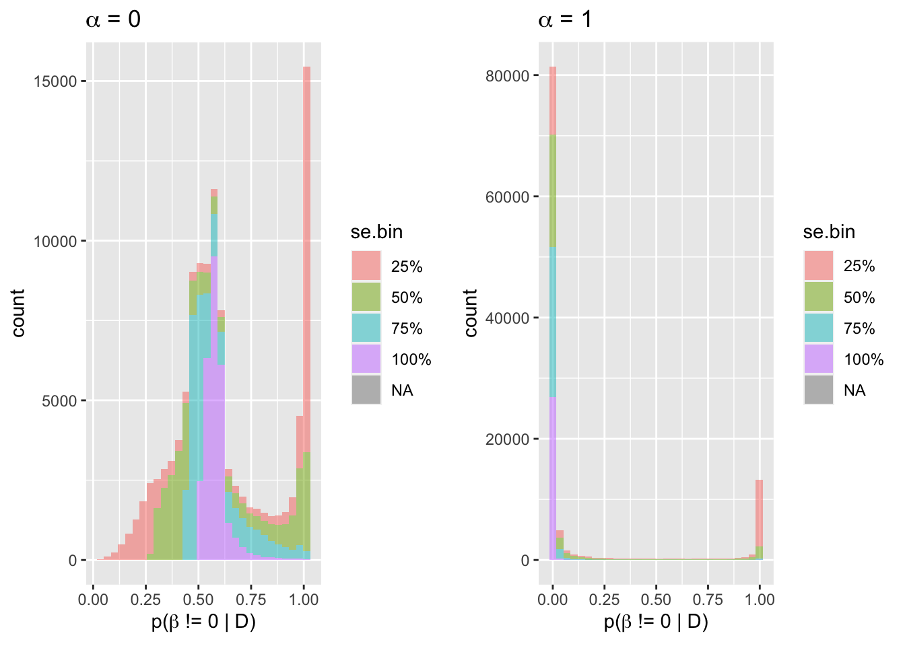

Last updated: 2022-04-10
Checks: 6 1
Knit directory: logistic-susie-gsea/
This reproducible R Markdown analysis was created with workflowr (version 1.7.0). The Checks tab describes the reproducibility checks that were applied when the results were created. The Past versions tab lists the development history.
Great! Since the R Markdown file has been committed to the Git repository, you know the exact version of the code that produced these results.
Great job! The global environment was empty. Objects defined in the global environment can affect the analysis in your R Markdown file in unknown ways. For reproduciblity it’s best to always run the code in an empty environment.
The command set.seed(20220105) was run prior to running the code in the R Markdown file. Setting a seed ensures that any results that rely on randomness, e.g. subsampling or permutations, are reproducible.
Great job! Recording the operating system, R version, and package versions is critical for reproducibility.
Nice! There were no cached chunks for this analysis, so you can be confident that you successfully produced the results during this run.
Using absolute paths to the files within your workflowr project makes it difficult for you and others to run your code on a different machine. Change the absolute path(s) below to the suggested relative path(s) to make your code more reproducible.
| absolute | relative |
|---|---|
| ~/Research/logistic-susie-gsea/data/de-droplet/de-droplet-noshrink.RData | data/de-droplet/de-droplet-noshrink.RData |
Great! You are using Git for version control. Tracking code development and connecting the code version to the results is critical for reproducibility.
The results in this page were generated with repository version 67092ad. See the Past versions tab to see a history of the changes made to the R Markdown and HTML files.
Note that you need to be careful to ensure that all relevant files for the analysis have been committed to Git prior to generating the results (you can use wflow_publish or wflow_git_commit). workflowr only checks the R Markdown file, but you know if there are other scripts or data files that it depends on. Below is the status of the Git repository when the results were generated:
Ignored files:
Ignored: .DS_Store
Ignored: .RData
Ignored: .Rhistory
Ignored: .Rproj.user/
Ignored: library/
Ignored: renv/library/
Ignored: renv/staging/
Ignored: staging/
Untracked files:
Untracked: .ipynb_checkpoints/
Untracked: Untitled.ipynb
Untracked: _targets.R
Untracked: _targets.html
Untracked: _targets.md
Untracked: _targets/
Untracked: _targets_r/
Untracked: analysis/fetal_reference_cellid_gsea.Rmd
Untracked: analysis/fixed_intercept.Rmd
Untracked: analysis/iDEA_examples.Rmd
Untracked: analysis/latent_gene_list.Rmd
Untracked: analysis/libra_setup.Rmd
Untracked: analysis/linear_method_failure_modes.Rmd
Untracked: analysis/linear_regression_failure_regime.Rmd
Untracked: analysis/logistic_susie_veb_boost_vs_vb.Rmd
Untracked: analysis/logistic_susie_vis.Rmd
Untracked: analysis/references.bib
Untracked: analysis/simulations.Rmd
Untracked: analysis/test.Rmd
Untracked: baboon_diet_cache/
Untracked: build_site.R
Untracked: cache/
Untracked: code/html_tables.R
Untracked: code/latent_logistic_susie.R
Untracked: code/logistic_susie_data_driver.R
Untracked: code/marginal_sumstat_gsea_collapsed.R
Untracked: code/sumstat_gsea.py
Untracked: code/susie_gsea_queries.R
Untracked: data/adipose_2yr_topsnp.txt
Untracked: data/de-droplet/
Untracked: data/deng/
Untracked: data/fetal_reference_cellid_gene_sets.RData
Untracked: data/human_chimp_eb/
Untracked: data/pbmc-purified/
Untracked: data/wenhe_baboon_diet/
Untracked: deng_example_cache/
Untracked: docs.zip
Untracked: index.md
Untracked: latent_logistic_susie_cache/
Untracked: simulation_targets/
Untracked: single_cell_pbmc_cache/
Untracked: single_cell_pbmc_l1_cache/
Untracked: summary_stat_gsea_exploration_cache/
Untracked: summary_stat_gsea_sim_cache/
Unstaged changes:
Modified: _simulation_targets.R
Modified: _targets.Rmd
Modified: analysis/baboon_diet.Rmd
Modified: analysis/deng_example.Rmd
Modified: analysis/gseabenchmark_tcga.Rmd
Modified: analysis/single_cell_pbmc.Rmd
Modified: analysis/single_cell_pbmc_l1.Rmd
Deleted: analysis/summary_stat_gsea_univariate_simulations.Rmd
Modified: code/fit_baselines.R
Modified: code/fit_logistic_susie.R
Modified: code/fit_mr_ash.R
Modified: code/fit_susie.R
Modified: code/marginal_sumstat_gsea.R
Modified: code/simulate_gene_lists.R
Modified: target_components/factories.R
Modified: target_components/methods.R
Note that any generated files, e.g. HTML, png, CSS, etc., are not included in this status report because it is ok for generated content to have uncommitted changes.
These are the previous versions of the repository in which changes were made to the R Markdown (analysis/alpha_for_single_cell.Rmd) and HTML (docs/alpha_for_single_cell.html) files. If you’ve configured a remote Git repository (see ?wflow_git_remote), click on the hyperlinks in the table below to view the files as they were in that past version.
| File | Version | Author | Date | Message |
|---|---|---|---|---|
| Rmd | 67092ad | karltayeb | 2022-04-10 | wflow_publish(“analysis/alpha_for_single_cell.Rmd”) |
| html | 690723c | karltayeb | 2022-04-10 | Build site. |
| Rmd | 67d1eb8 | karltayeb | 2022-04-10 | wflow_publish(“analysis/alpha_for_single_cell.Rmd”) |
Most GSEA methods operate on z-score/p-values Methods like ash use effect sizes and standard errors Both make implicit assumptions about the relationship between standard error and effect size. z-score model implies that larger standard errors imply larger effects on average. The summary stat model assumes standard errors and effect sizes are independent.
A family of
\[ \hat \beta_i | s_i \sim \mathcal{N}(\beta, s_i^2)\\ \beta_i | s_i \sim \pi_0 \delta_0 + \sum_k \pi_k \mathcal{N}(0, s_i^{2\alpha} \sigma^2_{0k}) \]
Before getting into the enrichment problem, we can explore how well the data support different values of \(\alpha\). Peter’s already shown for the droplet DE data that when we fit ASH with a grid of \(\alpha\) values we strongly prefer \(\alpha=0\). That is reproduced below.
We also carry out the same analysis with a point normal (where the normal component has variation \(\sigma_i = s_i^\alpha \sigma_0\)). For the point normal we estimate \(\pi_0\) and \(\sigma_0\) across a grid of \(\alpha\) values.
While the point normal also prefers small \(\alpha\) I think it is not really behaving the way we want to. Almost all the shrinkage from \(\alpha=1\) model comes from the point mass, which almost exclusively emphasizes tests with small standard errors. Almost all the shrinkage from \(\alpha=0\) comes from small estimate of \(\hat \sigma_0\), which could cause overly aggressive shrinkage of large effects.
load("~/Research/logistic-susie-gsea/data/de-droplet/de-droplet-noshrink.RData")library(fastTopics)
library(ashr)
library(ggplot2)
library(cowplot)
library(tidyverse)── Attaching packages ─────────────────────────────────────── tidyverse 1.3.1 ──✓ tibble 3.1.6 ✓ dplyr 1.0.8
✓ tidyr 1.2.0 ✓ stringr 1.4.0
✓ readr 2.1.2 ✓ forcats 0.5.1
✓ purrr 0.3.4 ── Conflicts ────────────────────────────────────────── tidyverse_conflicts() ──
x dplyr::filter() masks stats::filter()
x dplyr::lag() masks stats::lag()set.seed(1)
# Load the results of the DE analysis.
load("data/de-droplet/de-droplet-noshrink.RData")
b <- c(de_merged$postmean)
se <- c(with(de_merged,postmean/z))
#b <- de_merged$postmean[, 1]
#se <- de_merged$postmean[,1] / de_merged$z[,1]
i <- which(!is.na(se))
b <- b[i]
se <- se[i]
# Run adaptive shrinkage for different settings of alpha.
a <- seq(0,1,0.05)
n <- length(a)
ash.fits <- xfun::cache_rds({
vector("list",n)
for (i in 1:n) {
cat(i,"")
fits[[i]] <- ash(b,se,alpha = a[i])
}
cat("\n")
fits
}, dir='cache/alpha_for_single_cell', file='ash.fits')source('code/marginal_sumstat_gsea.R')
fit.fixed.alpha = function(a){
cat(a,"")
x <- rbinom(length(b), 1, 0.5)
gsea <- summary.stat.gsea(x=x, beta=b.mod, se=se)
params.init = list(
theta = c(0, 0),
alpha = a,
sigma0 = 1.0
)
res <- gsea$expectation.maximiztion(params.init, tol=1e-6, update.theta1 = F, update.alpha = F)
res$loglik <- tail(res$lik.history, 1)
# compute posterior mean
pi1.post <- res$responsibilities
var.post <- 1 / (1/se^2 + 1/res$sigma0^2)
mu.post <- var.post * b / se^2
res$PosteriorMean <- mu.post * pi1.post
return(res)
}
point.normal.fits <- xfun::cache_rds({
map(a, ~ fit.fixed.alpha(.x))
}, dir='cache/alpha_for_single_cell', file='point.normal.fits')pdat <- data.frame(
beta.hat = b,
se = se,
beta.post.ash.0 = ash.fits[[1]]$result$PosteriorMean,
beta.post.ash.1 = ash.fits[[n]]$result$PosteriorMean,
beta.post.pn.0 = point.normal.fits[[1]]$PosteriorMean,
resp.pn.0 = point.normal.fits[[1]]$responsibilities,
beta.post.pn.1 = point.normal.fits[[n]]$PosteriorMean,
resp.pn.1 = point.normal.fits[[n]]$responsibilities
)
q.ash.0 = quantile(ash.fits[[1]]$result$PosteriorMean, seq(0.05,0.95,0.01))
q.ash.1 = quantile(ash.fits[[n]]$result$PosteriorMean, seq(0.05,0.95,0.01))
q.pn.0 = quantile(point.normal.fits[[1]]$PosteriorMean, seq(0.05,0.95,0.01))
q.pn.1 = quantile(point.normal.fits[[n]]$PosteriorMean, seq(0.05,0.95,0.01))
quantiles <- as.data.frame(cbind(q.ash.0, q.ash.1, q.pn.0, q.pn.1))
loglik.ash <- map_dbl(ash.fits, ~pluck(.x, 'loglik'))
loglik.pn <- map_dbl(point.normal.fits, ~pluck(.x, 'loglik'))
loglik <- data.frame(
alpha=a,
loglik.ash = loglik.ash,
loglik.point.normal = loglik.pn
)
pi0.ash <- map_dbl(ash.fits, ~pluck(.x, 'fitted_g', 'pi', 1))
theta0.pn <- map_dbl(point.normal.fits, ~pluck(.x, 'theta', 1))
sigma0.pn <- map_dbl(point.normal.fits, ~pluck(.x, 'sigma0'))
params <- data.frame(
alpha=a,
pi0.ash = pi0.ash,
pi0.pn = 1 - 1/(1+exp(-theta0.pn)),
sigma0.pn = sigma0.pn
)# Plot likelihood vs. alpha.
p1 <- ggplot(loglik, aes(x = alpha,y = loglik.ash)) +
geom_point() +
geom_line() +
ggtitle("loglik vs. alpha") +
theme_cowplot(font_size = 12)
# Plot posterior estimates for best fit vs. worst fit.
p2 <- ggplot(pdat, aes(x = beta.post.ash.0, y = beta.post.ash.1, color = se)) +
geom_point() +
geom_abline(intercept = 0,slope = 1,color = "black",linetype = "dotted") +
scale_color_gradient2(
low = "lightskyblue",mid = "gold", high = "orangered", midpoint = 3) +
labs(
x = "alpha = 0",
y = "alpha = 1",
color = "s.e.",
title = "posterior estimates") +
theme_cowplot(font_size = 12)
# Compare the distributions of the estimated coefs.
x <- with(quantiles,c(q.ash.0,q.ash.1))
p3 <- ggplot(quantiles, aes(x = q.ash.0,y = q.ash.1)) +
geom_point() +
geom_abline(intercept = 0, slope = 1, color = "skyblue", linetype = "dashed") +
coord_cartesian(xlim = range(x), ylim = range(x)) +
labs(x = "alpha = 0",y = "alpha = 1",title = "quantiles") +
theme_cowplot(font_size = 12)
plot_grid(p1,p2,p3,nrow = 1,ncol = 3)
| Version | Author | Date |
|---|---|---|
| 690723c | karltayeb | 2022-04-10 |
# Plot likelihood vs. alpha.
p1 <- ggplot(loglik, aes(x = alpha,y = loglik.point.normal)) +
geom_point() +
geom_line() +
ggtitle("loglik vs. alpha") +
theme_cowplot(font_size = 12)
# Plot posterior estimates for best fit vs. worst fit.
p2 <- ggplot(pdat, aes(x = beta.post.pn.0, y = beta.post.pn.1, color = se)) +
geom_point() +
geom_abline(intercept = 0,slope = 1,color = "black",linetype = "dotted") +
scale_color_gradient2(
low = "lightskyblue",mid = "gold", high = "orangered", midpoint = 3) +
labs(
x = "alpha = 0",
y = "alpha = 1",
color = "s.e.",
title = "posterior estimates") +
theme_cowplot(font_size = 12)
# Compare the distributions of the estimated coefs.
x <- with(quantiles,c(q.pn.0,q.pn.1))
p3 <- ggplot(quantiles, aes(x = q.pn.0, y = q.pn.1)) +
geom_point() +
geom_abline(intercept = 0, slope = 1, color = "skyblue", linetype = "dashed") +
coord_cartesian(xlim = range(x), ylim = range(x)) +
labs(x = "alpha = 0",y = "alpha = 1",title = "quantiles") +
theme_cowplot(font_size = 12)
plot_grid(p1,p2,p3,nrow = 1,ncol = 3)
| Version | Author | Date |
|---|---|---|
| 690723c | karltayeb | 2022-04-10 |
ggplot(loglik %>% filter(alpha < 0.75), aes(x = alpha,y = loglik.point.normal)) +
geom_point() +
geom_line() +
ggtitle("point normal: loglik vs. alpha") +
theme_cowplot(font_size = 12)
| Version | Author | Date |
|---|---|---|
| 690723c | karltayeb | 2022-04-10 |
For large \(\alpha\) the point normal is not behaving very well. We estimate a large \(\hat \pi_0\) and a large \(\sigma_0\). Effects that the model is confident are non-zero experience virtually no shrinkage.
library(latex2exp)
ggplot(params, aes(x=pi0.pn, y=sigma0.pn, color=alpha)) +
geom_point() +
geom_line() +
scale_color_gradient2(
low = "lightskyblue",mid = "gold", high = "orangered", midpoint = 0.5) +
labs(
y = TeX('$\\sigma_0$'),
x = TeX('$\\hat{\\pi}_0')
)
| Version | Author | Date |
|---|---|---|
| 690723c | karltayeb | 2022-04-10 |
p1 <- ggplot(pdat, aes(x=resp.pn.0, y=1 - (beta.hat - beta.post.pn.0) / beta.hat, color=se)) +
geom_point() +
scale_color_gradient2(
low = "lightskyblue",mid = "gold", high = "orangered", midpoint = 3) +
labs(
x=TeX('p(\\beta != 0 | D)'),
y='Prop shrinkage',
title='Point normal alpha=0'
)
p2 <- ggplot(pdat, aes(x=resp.pn.1, y=1 - (beta.hat - beta.post.pn.1)/beta.hat, color=se)) +
geom_point() +
scale_color_gradient2(
low = "lightskyblue",mid = "gold", high = "orangered", midpoint = 3)+
labs(
x=TeX('p(\\beta != 0 | D)'),
y='Prop shrinkage',
title='Point normal alpha=1'
)
p3 <- ggplot(pdat, aes(x=resp.pn.1, y=resp.pn.0, color=se)) +
geom_point() +
scale_color_gradient2(
low = "lightskyblue",mid = "gold", high = "orangered", midpoint = 3)+
labs(
x=TeX('\\alpha = 1'),
y=TeX('\\alpha = 0'),
title=TeX('p(\\beta != 0 | D)')
)
cowplot::plot_grid(p1, p2, p3, ncol=3)
| Version | Author | Date |
|---|---|---|
| 690723c | karltayeb | 2022-04-10 |
se.quantile <- quantile(se, seq(0, 1, by=0.25))
bins <- cut(se, breaks=se.quantile, labels=paste0(seq(25, 100, by=25), '%'))
p1 <- pdat %>%
mutate(se.bin = bins) %>%
ggplot(aes(x=resp.pn.0, fill=se.bin)) +
geom_histogram(alpha=0.5) +
labs(
x=TeX('p(\\beta != 0 | D)'),
title=TeX('\\alpha = 0')
)
p2 <- pdat %>%
mutate(se.bin = bins) %>%
ggplot(aes(x=resp.pn.1, fill=se.bin)) +
geom_histogram(alpha=0.5) +
labs(
x=TeX('p(\\beta != 0 | D)'),
title=TeX('\\alpha = 1')
)
cowplot::plot_grid(p1, p2, ncol=2)`stat_bin()` using `bins = 30`. Pick better value with `binwidth`.
`stat_bin()` using `bins = 30`. Pick better value with `binwidth`.
| Version | Author | Date |
|---|---|---|
| 690723c | karltayeb | 2022-04-10 |
ash.fits[[1]]$result %>% head() betahat sebetahat NegativeProb PositiveProb lfsr svalue lfdr
1 2.58212791 1.1732159 0.1215613 0.3500913 0.6499087 0.2084865 0.5283474
2 0.32558790 1.0531090 0.1819386 0.2068794 0.7931206 0.6581300 0.6111820
3 -0.06576014 1.5470965 0.1991641 0.1964864 0.8008359 0.6851297 0.6043494
4 -0.14578994 0.4899848 0.1983269 0.1632234 0.8016731 0.6879907 0.6384496
5 -0.35677658 0.8606319 0.2111434 0.1734764 0.7888566 0.6406771 0.6153802
6 1.08295035 1.4687935 0.1752071 0.2245623 0.7754377 0.5314872 0.6002306
qvalue PosteriorMean PosteriorSD
1 0.1530132 0.239437038 0.6330393
2 0.4864695 0.013693219 0.2192425
3 0.4496810 -0.001836154 0.2585854
4 0.5555032 -0.011684457 0.1410027
5 0.5081373 -0.018360590 0.2008356
6 0.3961148 0.034677048 0.2840269knitr::knit_exit()